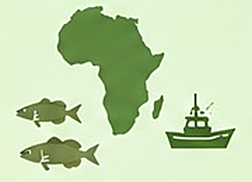
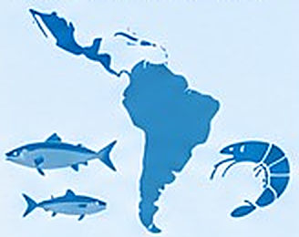
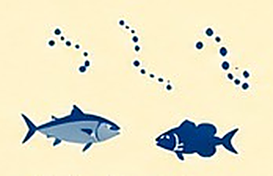
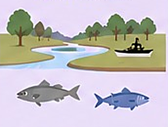

Regional hubs
Regional hubsDraft
Regional hubs bring location-specific examples, case studies and regionally used methods together in one place, so that users can find what is relevant to their own region and fishery.
Purpose of the regional hubs
Assessment methods are applied under very different conditions across the world. Each hub is written for one region and shows how toolbox methods, and methods already in regional use, are applied to the fisheries found there. The hubs work at three levels, from the regional setting, to the methods used in it, to worked examples of single fisheries.
Regional setting
ContextEach hub describes the fisheries, management arrangements and data situation of its region, so users can see conditions similar to their own before looking at any method.
- Regional context and key fisheries
- Management context and regional bodies
- Data situation, with sources such as FIRMS and SOFIA
- Typical pathways from data to advice
Regionally specific methods
MethodsMethods used mainly in one region are identified and placed beside the toolbox methods that serve a similar purpose, so users can compare them in one place.
- A table of tools often used in the region, with toolbox equivalents
- Known limits and research needs
- Training and resources
Case studies
Case studiesCase studies follow one fishery from data to management decision, showing a method working on real data with real limits. All use one format, so fisheries in different regions can be read side by side.
- See methods in practice for a fishery like the user's own
- Follow the route from assessment to scientific advice
- Compare fisheries with similar species, gears or data
- Learn from limits and what was done about them
Regions included
The six hubs follow the regional implementation platforms of the Global Stock Assessment Capacity Programme. Each hub has its own page, with regional priorities and partners as set out in the programme.

Asia
South, Southeast and East Asia- Multispecies trawl and multigear fleets
- Fleet overcapacity
- Tropical demersals
- Data-poor methods

Africa
West, Central, East and Southern Africa- Shared small pelagic stocks
- Demersal and small-scale fisheries
- Data-poor methods

Latin America
Pacific coast and Central America- Upwelling pelagics
- Shrimp and demersal multigear fisheries
- Data-poor methods

SIDS
Pacific, Caribbean and Indian Ocean- Reef and coastal multispecies stocks
- EEZ tuna linkages
- Very small national teams
- Data-poor methods

Inland fisheries
Lakes, rivers and reservoirs- Inland fish stocks
- Transboundary stocks
- Data-limited methods
Developed countries
Partner role- Method partners and peer review
- Twinning and mentoring
- Mixed-fishery advice experience
Regions compared
Hub boundaries follow the programme's regional implementation platforms. The table shows the areas and countries each hub covers, and the fisheries, gears and institutions found there, so users can decide where to start and which other hubs hold similar examples.
| Region | Areas and countries | Dominant fisheries | Dominant gears | Main regional bodies |
|---|---|---|---|---|
| Asia | South Asia: Bangladesh, India, Maldives, Pakistan, Sri Lanka; Southeast Asia: Brunei Darussalam, Cambodia, Indonesia, Lao PDR, Malaysia, Myanmar, Philippines, Singapore, Thailand, Viet Nam; East Asia: China, Japan, Republic of Korea (to be confirmed) | Multispecies trawl and multigear fisheries; tropical demersals; small-scale fisheries | Trawl, purse seine, other nets, handline5 | SEAFDEC, BOBP-IGO, APFIC |
| Africa | West Africa: to be confirmed; Central Africa: to be confirmed; East Africa: to be confirmed; Southern Africa: to be confirmed | Small pelagics; demersal and small-scale fisheries | To be added | WASOP–CECAF, SRFC, FCWC, SWIOFC, BCC |
| Latin America | Pacific coast: to be confirmed; Central America: to be confirmed | Upwelling pelagics; shrimp and demersal fisheries | Multigear fleets (shrimp and demersal) | WECAFC, OSPESCA, CPPS |
| SIDS | Pacific: to be confirmed; Caribbean: to be confirmed; Indian Ocean: to be confirmed | Reef and coastal multispecies fisheries; tuna fisheries | To be added | SPC, FFA, CRFM, WECAFC, Indian Ocean Tuna Commission, IORA |
| Inland fisheries | Lakes: to be confirmed; Rivers: to be confirmed; Reservoirs: to be confirmed | Fisheries of lakes, rivers and reservoirs | To be added | Regional bodies, river basin organizations and national institutions (e.g. LVFO, LTA, Nile, Niger, Mekong) |
| Developed countries | Partner institutions: to be confirmed | Mixed fisheries | To be added | ICES, NOAA, IMR Norway and other national laboratories |
Areas, fisheries and partners from the Global Stock Assessment Capacity Programme figure. Asia countries from the Asian stock assessment review (source 1) and gears from the FAO regional overview (source 5); see the source list on the Asia hub). Other regions are to be completed as their hubs are drafted.
Methods used only in specific areas
Some assessment methods are used widely in one region and hardly at all elsewhere. The map below shows the choices open to users, and what follows from each.
- Local data systems: what is collected shapes what can be run.
- Regional bodies and history: guidance and early projects spread certain methods.
- Training and software: methods taught and tools available locally.
- Fleet and fishery type: multispecies trawl and single-species fisheries call for different approaches.
- It suits the data and the question
- Its assumptions hold
- Management already accepts its results
Keep the established method and add a toolbox method alongside it, for stocks or data situations it cannot cover, or for outputs it does not give.
Method selector →Align status categories, reference points and reporting formats so regional results can feed SOFIA, FIRMS and SDG 14.4.1 reporting.
Standard of good practice →- Assumptions are violated
- Results cannot be compared across stocks or regions
- Advice needs reference points or uncertainty the method lacks
- The tool is no longer maintained
Report both methods for a period and explain differences.
Record assumptions and caveats, then retire the old method.
Training on new tools
FAO hosts and organises training workshops to help members learn how to use assessment tools. Users adding or changing tools can request training or look at resources on getting trained.
Connection to the cross-regional learning hub
The hubs sit inside the programme's cross-regional learning hub, which connects regions and themes for a global impact. Regional methods and case studies feed back into the shared toolbox, and the toolbox methods flow out to every region.
Shared method library and code
The toolbox itself, so a method documented once can be used in every region.
Joint working groups
Groups on shared or similar stocks, linking analysts across regions.
Analyst and trainer exchange
Staff move between hubs, which spreads regional methods and builds trainer capacity.
South–South and triangular cooperation
Regions with similar fisheries learn from each other, with support from partners.
Users with a regional method or case study to share can use Contribute. Training material is on Resources and training.